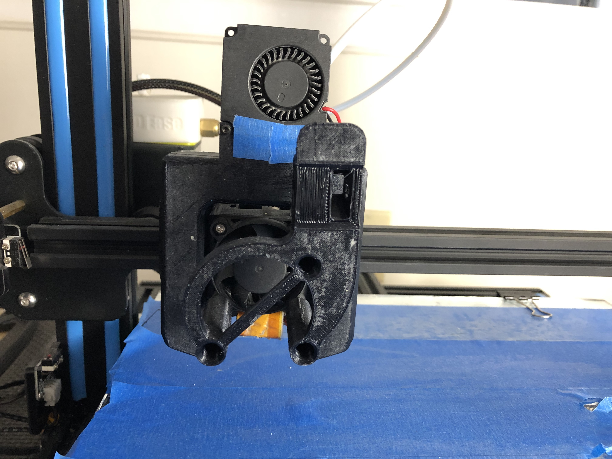
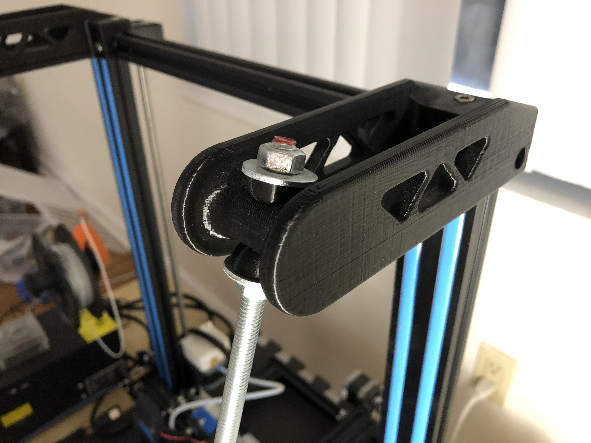
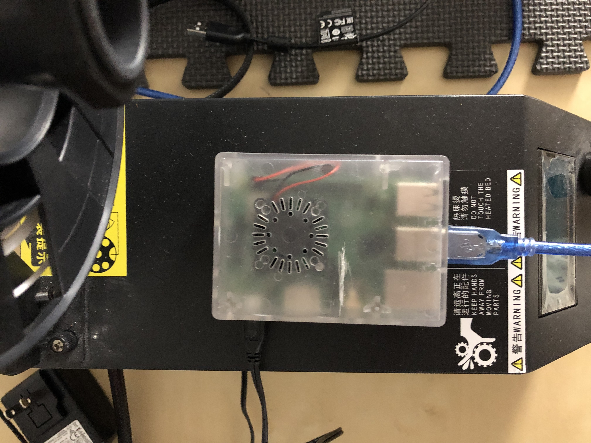
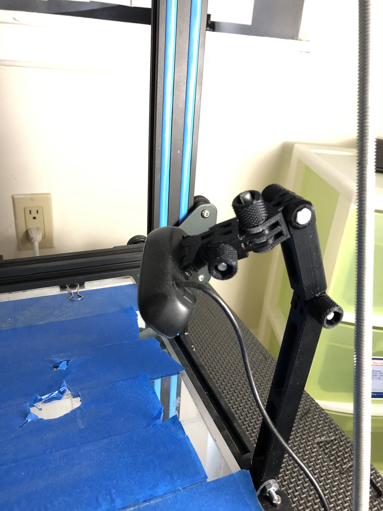

This is an upgrade to the previous project
Lane lines detection for self-driving cars.
In this project lane lines in videos are detected using Python and OpenCV.
Upgrades:




This an undergoing project, stay tuned for the latest updates!